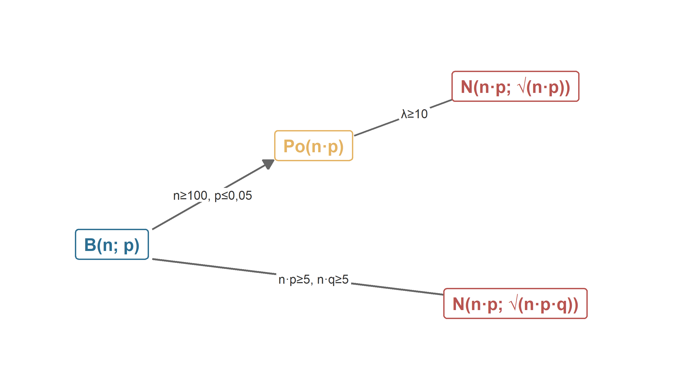
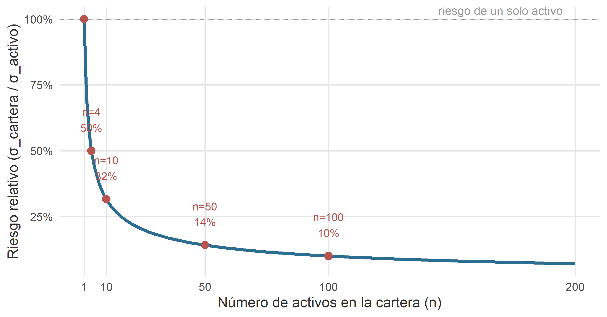
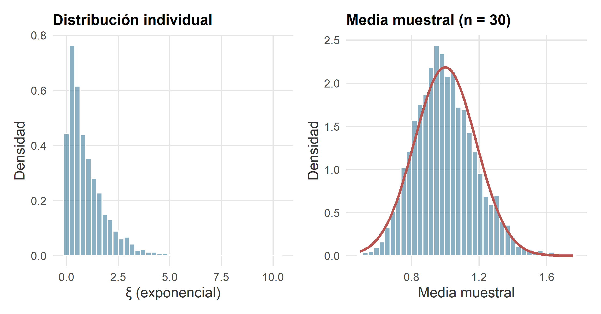

11 Convergencia y teoremas centrales del límite
Figura 11.1. Cada carguero, tomado uno a uno, tiene su carácter. La flotilla, en promedio, no tiene ninguno: es simplemente normal.
— Nota manuscrita al margen de un informe trimestral firmado por la analista jefe Ripley Strix, encontrado durante una auditoría rutinaria al sector logístico de kaiju haulage co.
11.1 Introducción
En el capítulo anterior desfilaron la uniforme, la exponencial, la normal y la log-normal. En cada uno de esos modelos, la campana normal apareció con más o menos disimulo: como aproximación de la binomial, como aproximación de la Poisson, como distribución conjugada de la log-normal, como distribución límite invocada de refilón. Que la normal aparezca una vez puede considerarse coincidencia; que aparezca dos ya es sospechoso; que aparezca siempre exige explicación.
La explicación se llama teorema central del límite (TCL, para los amigos). Es, sin exageración retórica, el resultado más importante de toda la probabilidad clásica y el pilar sobre el que se sostiene la inferencia estadística que ocupará el resto del curso. Su enunciado es sencillo de recordar y de una potencia desproporcionada: la suma de muchas variables aleatorias independientes, bajo condiciones muy poco exigentes, se distribuye aproximadamente como una normal, con independencia casi absoluta de cómo se distribuyan las variables sumandas.
Este capítulo se organiza en torno a tres ideas:
- Antes de hablar de un teorema del límite hace falta precisar qué significa que una sucesión de variables aleatorias tienda a algo. Introducimos brevemente los modos de convergencia relevantes y enunciamos la ley de los grandes números como aperitivo.
- Presentamos el TCL en su forma general (Lindeberg–Lévy) y sus dos casos particulares más útiles en la práctica: la aproximación binomial → normal (De Moivre–Laplace) y la aproximación Poisson → normal.
- Cerramos el círculo con el esquema completo de aproximaciones que enlaza a la binomial, la Poisson y la normal, junto con las reglas prácticas que determinan cuándo aplicar cada una, y con las aplicaciones económicas que el TCL habilita: diversificación, encuestas, seguros e inferencia.
Cómo leer este capítulo. El capítulo es teórico —no hay una nueva distribución que memorizar—, pero se apoya en simulaciones y ejemplos numéricos con entidades del universo RStars. Al terminar debería quedar claro por qué, en la práctica, casi cualquier promedio muestral acaba pareciendo una campana, aunque los datos originales no la tengan ni de lejos.
11.2 Convergencia de sucesiones de variables aleatorias
Cuando se habla de convergencia de sucesiones de números —“la sucesión \(x_{n} = 1/n\) converge a \(0\)”— la idea es intuitiva: para \(n\) grande, los términos están arbitrariamente cerca del límite. Con variables aleatorias la cosa se complica: cada \(\xi_{n}\) no es un número, sino una distribución. Definir cerca exige más cuidado. En lo que sigue solo necesitamos dos nociones.
11.2.1 Convergencia en probabilidad
Se dice que una sucesión de variables aleatorias \(\{\xi_{n}\}\) converge en probabilidad a una variable \(\xi\) si, para todo \(\varepsilon > 0\),
\[ \lim_{n \to \infty} P\left( |\xi_{n} - \xi| > \varepsilon \right) \;=\; 0. \]
Se escribe \(\xi_{n} \xrightarrow{P} \xi\). En palabras: por grande que sea \(n\), la probabilidad de que \(\xi_{n}\) se aleje del límite en más que un margen fijo tiende a cero. No es que \(\xi_{n}\) sea exactamente \(\xi\) para \(n\) grande —de hecho, no lo será casi nunca—, pero la probabilidad de errar por mucho se hace despreciable.
11.2.2 La ley (débil) de los grandes números
El ejemplo canónico —y el más importante en la práctica— de convergencia en probabilidad es la ley (débil) de los grandes números (LGN). Si \(\xi_{1}, \xi_{2}, \ldots\) son variables aleatorias independientes e idénticamente distribuidas (i.i.d., abreviatura estándar) con media \(\mu\) y varianza finita, entonces la media muestral
\[ \bar{\xi}_{n} \;=\; \frac{\xi_{1} + \xi_{2} + \cdots + \xi_{n}}{n} \]
converge en probabilidad a \(\mu\):
\[ \bar{\xi}_{n} \;\xrightarrow{P}\; \mu \quad \text{cuando } n \to \infty. \]
En palabras llanas: si tomamos suficientes observaciones y calculamos su media, esa media se parecerá tanto como queramos a la verdadera media poblacional. Es el principio que legitima usar una muestra grande para estimar un parámetro desconocido.
Existe también una versión más fuerte —la ley fuerte de los grandes números— que garantiza que la convergencia ocurre no solo “en probabilidad” sino “casi seguramente”: el conjunto de las sucesiones \((\xi_1, \xi_2, \ldots)\) para las que la media muestral no tiende a \(\mu\) tiene probabilidad cero. Para el uso ordinario en un curso de ADE la distinción es puramente académica; la LGN débil resuelve todos los problemas prácticos que nos vamos a plantear. Basta con saber que existen dos versiones y que la fuerte implica a la débil.
Un pequeño aviso: la LGN dice a dónde tiende la media muestral, pero no dice a qué velocidad ni con qué error. Para eso hará falta el TCL.
11.2.3 La LGN en la vida económica: seguros, casinos y encuestas
Antes de continuar, merece la pena detenerse un momento en el enorme peso económico de la LGN, porque tres industrias multimillonarias descansan literalmente sobre ella.
Los seguros. Una compañía de seguros no puede predecir si el asegurado individual Ripley Strix sufrirá un siniestro este año; su probabilidad es una lotería. Pero si la compañía asegura a decenas de miles de perfiles similares, el coste promedio por póliza —que es lo único que necesita saber para fijar primas y provisiones— será, por LGN, casi exactamente el coste esperado teórico. La aseguradora convierte, gracias al agregado, incertidumbre individual en previsibilidad colectiva. Es literalmente el modelo de negocio.
Los casinos. La casa no puede prever si un jugador concreto se irá con las manos vacías o con un jackpot. Pero como cada juego ofrece a la casa una esperanza matemática ligeramente positiva y se juegan millones de manos al día, por LGN el beneficio agregado del casino converge al valor esperado teórico. Cuando un cliente enfadado protesta que “a la larga la casa siempre gana”, no se le está escamoteando nada: se está enunciando la LGN aplicada al margen del jugador.
Las encuestas y el market making. Una encuesta a 2.000 votantes no acierta lo que va a votar cada uno; acierta —por LGN— la proporción del colectivo. Un market maker que compra y vende millones de acciones al día no gana ni pierde en cada operación; gana, por LGN, la esperanza matemática del spread. Sin la LGN, ni las encuestas ni la microestructura de los mercados financieros modernos serían viables.
Retengamos la idea general: el negocio de vender previsibilidad, en cualquiera de sus formas, es el negocio de aplicar la LGN a escala industrial.
11.2.4 Convergencia en distribución
La segunda noción es más débil pero más útil en los teoremas del límite. Se dice que \(\{\xi_{n}\}\) converge en distribución a una variable \(\xi\) si, para todo punto \(x\) de continuidad de la función de distribución límite \(F\),
\[ \lim_{n \to \infty} F_{\xi_{n}}(x) \;=\; F(x). \]
Se escribe \(\xi_{n} \xrightarrow{d} \xi\). Ya no exigimos que \(\xi_{n}\) y \(\xi\) se acerquen valor a valor: basta con que las funciones de distribución —y por tanto las probabilidades que asignan a intervalos— se parezcan cada vez más. Es la convergencia adecuada para hablar del TCL, donde lo relevante no es el valor concreto de una suma, sino la forma de su distribución.
Convergencia en probabilidad vs. convergencia en distribución. La primera implica la segunda —si \(\xi_{n}\) y \(\xi\) están cerca, sus distribuciones también—, pero el recíproco es falso. Dos variables pueden tener la misma distribución sin coincidir jamás en valor. La convergencia en distribución es, en cierto sentido, la que “menos pide”. Por eso es la más frecuente en los enunciados de teoremas del límite.
11.3 Teorema central del límite: la versión general
11.3.1 La intuición: la campana emergente
Empecemos por el fenómeno antes que por el enunciado. Consideremos la variable COSTOP del fichero interestelar_300.xlsx, que en el capítulo anterior identificamos como log-normal: muy asimétrica, con la mayoría de empresas concentradas en costes bajos y una cola larga hacia la derecha. Nada más lejano a una campana normal.
Ahora hagamos un experimento mental (y en un momento, real). Tomemos \(n\) empresas al azar, calculemos el coste operativo medio de esas \(n\), y anotemos ese número. Repitamos la operación miles de veces, cambiando cada vez las empresas seleccionadas. Obtendremos miles de valores de la media muestral \(\bar{\xi}_{n}\). La pregunta es: ¿qué distribución sigue esta nueva variable \(\bar{\xi}_{n}\)?
La respuesta la anticipa el TCL: conforme \(n\) crece, la distribución de \(\bar{\xi}_{n}\) se vuelve normal, con independencia de que la variable original no lo fuera en absoluto. La asimetría se disuelve, las colas se reducen, y la campana emerge sola.
La figura 11.1 hace visible este fenómeno. En el primer panel se muestra la distribución empírica de COSTOP sobre las 300 empresas: fuertemente asimétrica. En los paneles siguientes se muestra la distribución de la media muestral \(\bar{\xi}_{n}\) para tamaños \(n = 3, 10, 30\) y \(100\), obtenida remuestreando 5000 veces sobre la población. El progreso hacia la campana es visible y sistemático: cuanto mayor es \(n\), más simétrica, más concentrada y más normal es la distribución de la media.
![Ilustración empírica del TCL. En el panel etiquetado como $n = 1$ se muestra la distribución original de la variable `COSTOP` (costes operativos, en miles de PAVOs) sobre las 300 empresas del fichero `interestelar_300.xlsx`: fuertemente asimétrica, muy lejos de una normal. En los paneles restantes se muestra la distribución de la media muestral $\bar{\xi}_{n}$ para tamaños $n = 3, 10, 30, 100$, obtenida remuestreando 5000 veces con reemplazamiento. La curva roja superpone en cada caso la normal $N(\mu;\, \sigma/\sqrt{n})$ predicha por el TCL. La convergencia a la campana es sistemática, aun cuando la distribución de partida no lo es en absoluto.](EstadisticaEmpresarial_files/figure-html/fig-tcl-costop-1.png)
Figure 11.1: Ilustración empírica del TCL. En el panel etiquetado como \(n = 1\) se muestra la distribución original de la variable COSTOP (costes operativos, en miles de PAVOs) sobre las 300 empresas del fichero interestelar_300.xlsx: fuertemente asimétrica, muy lejos de una normal. En los paneles restantes se muestra la distribución de la media muestral \(\bar{\xi}_{n}\) para tamaños \(n = 3, 10, 30, 100\), obtenida remuestreando 5000 veces con reemplazamiento. La curva roja superpone en cada caso la normal \(N(\mu;\, \sigma/\sqrt{n})\) predicha por el TCL. La convergencia a la campana es sistemática, aun cuando la distribución de partida no lo es en absoluto.
La tabla ?? resume el fenómeno cuantitativamente. La media de las medias se mantiene prácticamente constante en torno a \(\mu \approx 97,8\) miles de PAVOs (como anticipa la LGN), pero la desviación típica de \(\bar{\xi}_{n}\) decrece con \(\sqrt{n}\): al pasar de \(n = 3\) a \(n = 100\), la dispersión se divide aproximadamente por \(\sqrt{100/3} \approx 5{,}77\). Este comportamiento —la desviación típica de la media muestral es \(\sigma / \sqrt{n}\)— es el sello del TCL.
| \(n\) | Media de \(\bar{\xi}_{n}\) | SD empírica de \(\bar{\xi}_{n}\) | SD teórica \(\sigma / \sqrt{n}\) |
|---|---|---|---|
| 1 | 97.80 | 179.27 | 179.27 |
| 3 | 100.85 | 106.72 | 103.50 |
| 10 | 97.29 | 55.93 | 56.69 |
| 30 | 97.78 | 32.61 | 32.73 |
| 100 | 97.79 | 17.87 | 17.93 |
Tabla 11.1
Con la intuición asentada, pasamos al enunciado formal.
11.3.2 Enunciado (Lindeberg–Lévy)
La versión más útil y limpia del TCL —debida a los matemáticos Jarl Lindeberg y Paul Lévy en los años veinte— es la siguiente.
Sea \(\{\xi_{n}\}\) una sucesión de variables aleatorias independientes e idénticamente distribuidas (i.i.d.) con media \(E(\xi_{j}) = \mu\) y varianza \(\operatorname{Var}(\xi_{j}) = \sigma^{2} < \infty\) para todo \(j\). Sea \(\eta_{n} = \xi_{1} + \xi_{2} + \cdots + \xi_{n}\) su suma. Entonces:
\[ \frac{\eta_{n} - n \mu}{\sqrt{n\, \sigma^{2}}} \;\xrightarrow{d}\; N(0;\, 1) \quad \text{cuando } n \to \infty. \]
Equivalentemente, en términos de la media muestral \(\bar{\xi}_{n} = \eta_{n} / n\):
\[ \frac{\bar{\xi}_{n} - \mu}{\sigma / \sqrt{n}} \;\xrightarrow{d}\; N(0;\, 1). \]
Las dos versiones dicen exactamente lo mismo, escrito una vez para sumas y otra para medias. La suma \(\eta_{n}\) se comporta aproximadamente como una \(N(n \mu;\, \sqrt{n}\, \sigma)\), y la media \(\bar{\xi}_{n}\) se comporta aproximadamente como una \(N(\mu;\, \sigma / \sqrt{n})\), siempre que \(n\) sea suficientemente grande.
Las condiciones son sorprendentemente laxas: independencia, distribución común, varianza finita. Ni una palabra sobre la forma de la distribución original. Los \(\xi_{j}\) pueden ser Bernoullis (0 o 1), pueden ser exponenciales (una cola larga y desagradable), pueden ser uniformes, pueden ser variables muy asimétricas como la COSTOP del ejemplo anterior. Si son i.i.d. con varianza finita, el TCL funciona. Esta universalidad es la razón de su omnipresencia.
¿Y si las condiciones no se cumplen? El TCL tiene versiones más generales para variables no idénticamente distribuidas (condición de Lindeberg), débilmente dependientes (procesos estacionarios), o incluso vectoriales (TCL multivariante). En cualquier introducción como esta bastará con Lindeberg–Lévy. Cuando una variable tenga colas tan pesadas que su varianza no exista —como la distribución de Cauchy—, el TCL clásico falla y aparecen distribuciones límite alternativas (\(\alpha\)-estables). Es un mundo interesante, pero muy fuera del alcance de este manual.
11.3.3 El error estándar y las cuatro fórmulas de referencia
La cantidad \(\sigma / \sqrt{n}\) que aparece en el denominador del TCL para medias tiene tal centralidad práctica que ha ganado nombre propio: se denomina error estándar (standard error, SE) de la media muestral. No es la desviación típica de la variable original, sino la desviación típica del estimador: mide cuánto oscila la media muestral en torno a la verdadera media poblacional cuando repetimos el muestreo.
Es imprescindible distinguir bien los dos conceptos:
- \(\sigma\) es la variabilidad de la población. No depende de \(n\): es la que hay.
- \(\sigma / \sqrt{n}\) es la variabilidad de la media muestral. Sí depende de \(n\): al aumentar el tamaño muestral, cae como \(1/\sqrt{n}\).
Toda la inferencia estadística del próximo bloque se moverá entre estos dos conceptos. Diremos “el error estándar” muchísimas veces; conviene tenerlo instalado desde ya.
Con el error estándar en la mano, el TCL admite cuatro aplicaciones canónicas que aparecen sistemáticamente en la práctica del analista. La tabla ?? las resume.
| Estadístico | Distribución aproximada | Uso típico |
|---|---|---|
| Suma \(\eta_n = \xi_1 + \cdots + \xi_n\) | \(N\!\left(n\mu;\; \sigma\sqrt{n}\right)\) | Tonelaje total, ingresos anuales agregados, siniestros totales. |
| Media muestral \(\bar\xi_n\) | \(N\!\left(\mu;\; \sigma / \sqrt{n}\right)\) | Precio medio, tiempo medio, coste medio. |
| Proporción muestral \(\hat p = X/n\) (con \(X \to B(n; p)\)) | \(N\!\left(p;\; \sqrt{p q / n}\right)\) | Encuestas electorales, tasa de fallo, tasa de conversión. |
| Diferencia de medias \(\bar\xi_n - \bar\eta_m\) (muestras indep.) | \(N\!\left(\mu_1 - \mu_2;\; \sqrt{\sigma_1^{2}/n + \sigma_2^{2}/m}\right)\) | Comparar dos grupos: test A/B, dos sucursales, dos periodos. |
Tabla 11.2
Los tres últimos casos son la base operativa de casi cualquier análisis empresarial que involucre datos: encuestas, tests A/B para comparar dos versiones de una web, estudios de impacto para comparar dos periodos, control de calidad, gestión de riesgos… En cada uno de ellos, la estrategia es siempre la misma: identificar el estimador, calcular su error estándar, tipificar y consultar la normal.
11.3.4 ¿Qué significa “\(n\) suficientemente grande”?
La pregunta pragmática que sigue al enunciado es: ¿a partir de qué \(n\) podemos empezar a usar el TCL sin sonrojarnos? La respuesta honesta es “depende de la distribución de partida”:
- Si los \(\xi_{j}\) son ya aproximadamente simétricos y sin colas pesadas, \(n \geq 30\) suele ser más que suficiente. Muchos manuales fijan \(n \geq 30\) como umbral de referencia y no van descaminados.
- Si los \(\xi_{j}\) son marcadamente asimétricos —como los costes operativos, ingresos o tamaños de flota—, la aproximación es peor y conviene exigir \(n\) bastante mayor (típicamente \(n \geq 100\)).
- Si los \(\xi_{j}\) son binarios (Bernoulli), el criterio operativo será \(n p \geq 5\) y \(n q \geq 5\), que veremos en la sección siguiente.
En cualquier caso, el TCL es un teorema asintótico: cuanto mayor sea \(n\), mejor será la aproximación. Los umbrales son heurísticos.
11.3.5 Ejemplo: tiempo medio de descarga en Klendathu
Pasamos ahora a un ejemplo numérico concreto. El astropuerto de Klendathu, base operativa de cuatro cargueros por astillero según el fichero astilleros_48.xlsx, procesa a lo largo del día un elevado número de descargas. El tiempo de descarga de un contenedor individual, medido en minutos, es una variable claramente no normal: la mayoría de contenedores se despachan en \(8\)–\(15\) minutos, pero algunos —los que exigen inspección aduanera, o los que llegan con documentación irregular— se prolongan una hora o más. La distribución tiene una fuerte cola derecha y se aproxima razonablemente por una exponencial con media \(\mu = 12\) minutos y desviación típica \(\sigma = 12\) minutos (recuerde: en la exponencial, media y desviación típica coinciden).6
La jefa de operaciones del turno, Padmé Ardea, prepara un informe semanal donde figura el tiempo medio de descarga de los primeros \(n = 60\) contenedores del turno. Es decir, la variable
\[ \bar{\xi}_{60} \;=\; \frac{\xi_{1} + \xi_{2} + \cdots + \xi_{60}}{60}, \]
con los \(\xi_{j}\) exponenciales i.i.d. con media \(12\) y desviación típica \(12\).
¿Qué distribución sigue \(\bar{\xi}_{60}\)? La distribución exponencial es asimétrica —lo vimos en el capítulo 10— y por tanto los tiempos individuales no son normales. Pero por el TCL (Lindeberg–Lévy), con \(n = 60\) el promedio ya se comporta aproximadamente como una normal, con error estándar \(\sigma / \sqrt{n} = 12/\sqrt{60} \approx 1{,}549\):
\[ \bar{\xi}_{60} \;\approx\; N\!\left( 12;\; \frac{12}{\sqrt{60}} \right) \;=\; N(12;\, 1{,}549). \]
La media es la misma que la de un tiempo individual (\(12\) minutos). Pero el error estándar es solo \(1{,}55\) minutos: el promedio de 60 contenedores es unas \(\sqrt{60} \approx 7{,}75\) veces más concentrado que un contenedor individual. Es la razón matemática por la que promediar reduce el ruido: no es magia, es TCL.
Preguntas concretas del informe de Padmé Ardea:
-
Que el tiempo medio de descarga del turno sea inferior a \(11\) minutos.
Tipificando con \(\mu = 12\) y error estándar \(\approx 1{,}549\):
\[ z = \frac{11 - 12}{1{,}549} \approx -0{,}65 \quad\Longrightarrow\quad P(\bar{\xi}_{60} < 11) \approx 0,2593. \]
Alrededor de un \(26\,\%\) de los turnos, la operación transcurre con inusual soltura.
-
Que la media caiga en la franja aceptable \([10;\, 13]\) minutos.
\[ P(10 \leq \bar{\xi}_{60} \leq 13) \approx 0,6423. \]
Alrededor de dos tercios de los turnos. Estable, pero no perfecto.
-
Que la media supere los \(14\) minutos (umbral de alerta).
\[ P(\bar{\xi}_{60} > 14) \approx 0,0984. \]
Menos de un \(10\,\%\) de los turnos, aproximadamente un turno de cada diez.
Un ejercicio mental que conviene hacer. La misma pregunta sobre un contenedor individual da resultados muy diferentes. La probabilidad de que un contenedor individual tarde más de 14 minutos, siendo su tiempo exponencial de media 12, es \(P(\xi > 14) = e^{-14/12} \approx 0,3114\) —¡más del \(31\,\%\)! El promedio de 60 contenedores no supera los 14 minutos casi nunca, aunque uno de cada tres contenedores individualmente sí lo haga. La agregación concentra al arrastrar los valores hacia la media. Esa es la lección práctica del TCL, resumida en una línea.
11.4 Teorema central del límite: el caso binomial
Con la versión general en la mano, pasamos ahora a los dos casos particulares que se usan una y otra vez en la práctica. El primero es histórica y pedagógicamente el más antiguo: la aproximación binomial → normal, debida a Abraham de Moivre (1733) y refinada por Pierre-Simon Laplace (1812) más de un siglo antes de que Lindeberg y Lévy formularan el resultado general. Puestos a poner nombres a las cosas, sería más justo llamarlo teorema de De Moivre–Laplace, que es como aparece en los manuales cuidadosos.
11.4.1 Enunciado
Sea \(\eta_{n} \to B(n;\, p)\) una variable binomial. Recuérdese que \(\eta_{n}\) puede escribirse como suma de \(n\) Bernoullis \(\xi_{j} \to B(1;\, p)\) independientes:
\[ \eta_{n} \;=\; \xi_{1} + \xi_{2} + \cdots + \xi_{n}, \]
con \(E(\xi_{j}) = p\) y \(\operatorname{Var}(\xi_{j}) = p q\) (donde \(q = 1 - p\)). Aplicando el TCL de Lindeberg–Lévy directamente:
\[ \frac{\eta_{n} - n p}{\sqrt{n p q}} \;\xrightarrow{d}\; N(0;\, 1) \quad \text{cuando } n \to \infty. \]
Es decir, para \(n\) grande:
\[ \eta_{n} \;\approx\; N\!\left( n p;\; \sqrt{n p q} \right). \]
El criterio operativo para considerar aceptable la aproximación es doble:
\[ n p \geq 5 \quad \text{y} \quad n q \geq 5. \]
Cuando ambos productos superan el \(5\), la binomial es lo bastante “simétrica” para que la campana la aproxime bien. Cuando alguno de los dos no llega —típicamente porque \(p\) es muy pequeño o muy grande—, la binomial está pegada a un extremo y la normal no es un buen modelo (en esos casos, si además \(n\) es grande, funcionará mejor la aproximación por Poisson que veremos más adelante).
11.4.2 Ejemplo: rutas exitosas de arrakis freight
arrakis freight opera \(n = 200\) rutas comerciales semanales en el corredor de la Gran Nube de Magallanes. La probabilidad de que una ruta individual se complete sin ninguna incidencia (retraso, avería, desvío, decomiso aduanero) es del \(p = 0{,}70\), cifra estimada a partir del histórico consolidado.7 Sea
\[ \eta \;=\; \text{"número de rutas exitosas en la semana"} \;\to\; B(200;\, 0{,}70). \]
Verificamos las condiciones: \(n p = 140 \geq 5\) y \(n q = 60 \geq 5\). Podemos aproximar sin cargo de conciencia:
\[ \eta \;\approx\; N\!\left( 140;\; \sqrt{200 \cdot 0{,}7 \cdot 0{,}3} \right) \;=\; N(140;\, 6,481). \]
Preguntas de la analista Ripley Strix al preparar la memoria trimestral:
-
Probabilidad de completar menos de \(130\) rutas exitosas.
Tipificando: \(z = (130 - 140) / 6,481 \approx -1{,}54\).
\[ P(\eta < 130) \;\approx\; P(\xi^{*} < -1{,}54) \;=\; 0,0614. \]
Alrededor de un \(6\,\%\) de las semanas. Poco frecuente, pero no imposible.
-
Probabilidad de completar entre \(130\) y \(150\) rutas.
\[ P(130 \leq \eta \leq 150) \;\approx\; 0,8772. \]
Alrededor del \(85\,\%\) de las semanas. La franja habitual.
-
Probabilidad de completar \(150\) o más rutas.
\[ P(\eta \geq 150) \;\approx\; 0,0614. \]
Alrededor de un \(6\,\%\) de las semanas. Semanas de gloria, dignas de mención en el informe.
Sin la aproximación normal, habría que sumar términos binomiales del tipo \(\binom{200}{k}\, 0{,}7^{k}\, 0{,}3^{200-k}\) para todos los \(k\) relevantes. Con la aproximación, tres tipificaciones y una consulta a la tabla resuelven el problema. Y el error, como veremos enseguida, es minúsculo.
11.4.3 La corrección por continuidad
Hay un detalle técnico que conviene conocer aunque no siempre lo apliquemos. La binomial es una variable discreta (toma solo valores enteros); la normal es continua. Al aproximar una por la otra, hay un pequeño desajuste conceptual que se corrige con el llamado factor de corrección por continuidad o corrección de Yates.
La idea, en su forma más simple: cada valor entero \(k\) de la binomial “ocupa”, desde el punto de vista de la normal aproximante, el intervalo \([k - 0{,}5;\, k + 0{,}5]\). Por tanto:
- \(P(\eta \leq k) \;\approx\; P\!\left( N \leq k + 0{,}5 \right)\).
- \(P(\eta \geq k) \;\approx\; P\!\left( N \geq k - 0{,}5 \right)\).
- \(P(\eta = k) \;\approx\; P\!\left( k - 0{,}5 \leq N \leq k + 0{,}5 \right)\).
Aplicado al ejemplo de arrakis freight, la probabilidad de completar \(150\) o más rutas se calcularía con corrección como
\[ P(\eta \geq 150) \;\approx\; P\!\left( N \geq 149{,}5 \right) \;=\; 0,0713, \]
frente al \(0,0614\) sin corrección. La probabilidad exacta binomial, calculable en R con pbinom(149, 200, 0.7, lower.tail = FALSE), es \(0,0695\). La corrección se acerca ligeramente más al valor exacto, como cabía esperar.
La tabla ?? resume la comparación en las tres probabilidades del ejemplo.
| Evento | Probabilidad exacta (binomial) | Aproximación normal (sin corrección) | Aproximación normal (con corrección) |
|---|---|---|---|
| \(P(\eta < 130)\) | 0.0542 | 0.0614 | 0.0526 |
| \(P(\eta \geq 150)\) | 0.0695 | 0.0614 | 0.0713 |
Tabla 11.3
En la práctica: para \(n\) moderado (digamos \(n < 100\)) la corrección por continuidad merece la pena; para \(n\) grande el efecto es despreciable y suele omitirse. En este manual seguiremos la convención del material docente y no aplicaremos la corrección por defecto, aunque conviene tenerla presente y aplicarla si se pide expresamente o si el resultado va a compararse con probabilidades exactas.
11.5 Aproximación Poisson → normal
El segundo caso particular del TCL que interesa retener es la aproximación Poisson → normal. La idea es la misma: una Poisson con parámetro \(\lambda\) grande puede escribirse como suma de muchas Poissons de parámetro pequeño, y por el TCL esa suma se aproxima a una normal.
11.5.1 Enunciado
Sea \(\eta \to \mathrm{Po}(\lambda)\). Para \(\lambda\) grande:
\[ \eta \;\approx\; N\!\left( \lambda;\; \sqrt{\lambda} \right). \]
Es decir, la Poisson se aproxima por una normal con la misma media y desviación típica \(\sqrt{\lambda}\). El criterio operativo habitual es \(\lambda \geq 10\) (algunos manuales flexibilizan hasta \(\lambda \geq 5\), pero la calidad de la aproximación en ese rango es discutible). Como en el caso binomial, se puede aplicar corrección por continuidad, aunque su efecto es marginal para \(\lambda\) grande.
11.5.2 Ejemplo: incidencias graves acumuladas en la flota KORRIGAN
El astillero KORRIGAN opera \(16\) cargueros según el fichero astilleros_48.xlsx. Las incidencias graves (variable IIG) se distribuyen razonablemente como una Poisson, con una tasa media de \(4{,}0\) incidencias por nave a lo largo de la vida operativa registrada.8 El ingeniero Anakin Falco, jefe de mantenimiento —a quien ya conocimos en el capítulo 10—, quiere estimar el número total de incidencias graves esperado en la flota completa durante los próximos cinco años, suponiendo constante la tasa histórica.
Si por cada nave se esperan aproximadamente \(1{,}5\) incidencias en los próximos cinco años, el total esperado para las \(16\) naves es \(\lambda = 16 \cdot 1{,}5 = 24\). Sea
\[ \eta \;=\; \text{"nº total de incidencias graves en la flota KORRIGAN a 5 años"} \;\to\; \mathrm{Po}(24). \]
Con \(\lambda = 24 \gg 10\), la aproximación normal es totalmente aceptable:
\[ \eta \;\approx\; N\!\left( 24;\; \sqrt{24} \right) \;=\; N(24;\, 4,899). \]
Preguntas de Anakin Falco al preparar el presupuesto de mantenimiento:
-
Probabilidad de que la flota acumule menos de \(20\) incidencias graves en cinco años.
Tipificando: \(z = (20 - 24) / 4,899 \approx -0{,}82\).
\[ P(\eta < 20) \;\approx\; 0,2071. \]
Alrededor de un \(20\,\%\): un escenario optimista pero no desechable.
-
Probabilidad de que las incidencias caigan en el rango de planificación \([18;\, 30]\).
\[ P(18 \leq \eta \leq 30) \;\approx\; 0,7793. \]
Alrededor del \(80\,\%\) de los escenarios. El presupuesto se dimensiona sobre este rango.
-
Probabilidad de exceder las \(35\) incidencias (umbral que dispararía una revisión estratégica).
Tipificando: \(z = (35 - 24) / 4,899 \approx 2{,}25\).
\[ P(\eta > 35) \;\approx\; 0,0124. \]
Alrededor de un \(1\,\%\). Muy poco probable, aunque prudencia dicta contemplarlo. El valor exacto de Poisson, para comparación, es \(0,0132\): prácticamente idéntico. La aproximación es excelente.
El caso agregado como TCL puro. La flota KORRIGAN es un caso instructivo porque el TCL opera dos veces sin decirlo. En primer lugar, cada nave individual acumula incidencias en cinco años como una Poisson pequeña (\(\lambda_{j} = 1{,}5\)), asimétrica y muy poco normal. Al sumar las 16 naves, obtenemos una Poisson agregada con \(\lambda = 24\) que ya es prácticamente indistinguible de una normal. La agregación —de naves, de rutas, de contenedores, de trabajadores— es el motor silencioso por el que la normal aparece en todo problema empresarial mínimamente colectivo.
11.6 El esquema completo de aproximaciones
Recogemos ahora todas las aproximaciones vistas hasta aquí, incluidas las del capítulo 9 (binomial → Poisson), en un solo mapa. La figura ?? es el resumen visual, y la tabla ?? da los criterios operativos.

Figura 11.2. Esquema de las aproximaciones entre modelos discretos y normal. La binomial admite dos rutas de aproximación: hacia Poisson (cuando \(p\) es pequeño y \(n\) es moderado o grande) y hacia normal (cuando ni \(p\) ni \(q\) son extremos). La Poisson, a su vez, se aproxima por normal cuando \(\\lambda\) es grande. La normal es el destino común de todas las trayectorias: es el atractor probabilístico universal.
| Distribución de partida | Distribución aproximante | Criterio operativo | Justificación teórica |
|---|---|---|---|
| Binomial \(B(n; p)\) | Poisson \(\mathrm{Po}(n p)\) | \(n \geq 100\) y \(p \leq 0{,}05\) | Sucesos raros: la Poisson es el límite de la binomial cuando \(p \to 0\) manteniendo \(n p\) constante. |
| Binomial \(B(n; p)\) | Normal \(N(n p;\, \sqrt{n p q})\) | \(n p \geq 5\) y \(n q \geq 5\) | TCL en su versión De Moivre–Laplace: la binomial es una suma de \(n\) Bernoullis i.i.d. |
| Poisson \(\mathrm{Po}(\lambda)\) | Normal \(N(\lambda;\, \sqrt{\lambda})\) | \(\lambda \geq 10\) | TCL: una Poisson de parámetro grande es suma de muchas Poisson pequeñas. |
Tabla 11.4
11.6.1 Ejemplo integrado: pruebas de nuevos motores en el astillero SELENE
Un ejemplo compuesto ilustra cómo las tres aproximaciones se encadenan en la práctica. El astillero SELENE, con base en el sector Miranda, está sometiendo a validación una nueva generación de motores de curvatura. En el programa de pruebas se someterán a estrés extremo \(n = 400\) motores prototípicos, y se sabe por experiencia previa —el prototipo generacional anterior— que la probabilidad de que un motor individual falle durante las pruebas es de \(p = 0{,}03\).
Sea \(\eta\) = “número de motores que fallan durante las pruebas”, \(\eta \to B(400;\, 0{,}03)\).
Comprobamos qué aproximaciones son aplicables:
- Binomial → Poisson. \(n = 400 \geq 100\) y \(p = 0{,}03 \leq 0{,}05\). Sí. Aproximamos \(\eta \approx \mathrm{Po}(n p) = \mathrm{Po}(12)\).
- Poisson → Normal. \(\lambda = 12 \geq 10\). Sí. Aproximamos \(\eta \approx N(12;\, \sqrt{12}) = N(12;\, 3,464)\).
- Binomial → Normal directamente. \(n p = 12 \geq 5\) y \(n q = 388 \geq 5\). Sí. Aproximamos \(\eta \approx N(12;\, \sqrt{n p q}) = N(12;\, 3,412)\).
Las dos rutas hacia la normal —vía Poisson intermedia y directa— convergen prácticamente al mismo resultado: la desviación típica \(\sqrt{n p q} = 3,412\) solo difiere de \(\sqrt{\lambda} = 3,464\) en el factor \(\sqrt{q} = \sqrt{0{,}97} \approx 0{,}985\), que es despreciable en la práctica. La tabla ?? verifica esta convergencia calculando la misma probabilidad —que fallen \(15\) o más motores— por los cuatro caminos.
| Método de cálculo | \(P(\eta \geq 15)\) |
|---|---|
| Binomial exacta | 0.2252 |
| Poisson exacta | 0.2280 |
| Normal desde binomial | 0.1896 |
| Normal desde Poisson | 0.1932 |
Tabla 11.5
La lectura práctica es que, para el rango de parámetros en el que ambas condiciones se cumplen holgadamente, cualquiera de las aproximaciones ordena bien las probabilidades. En términos de comodidad de cálculo, la normal es la más rápida (una sola tipificación); en términos de exactitud, la Poisson exacta queda notablemente más cerca del valor binomial que las normales, sobre todo en las colas. La brecha de unos tres puntos porcentuales entre las exactas y las normales se debe al desajuste entre lo discreto y lo continuo, y desaparece con la corrección por continuidad —comprobación que se deja como ejercicio para el lector curioso.
¿Y si un criterio no se cumple? Reglas prácticas para casos frontera:
- Si \(n p < 5\) pero \(n\) es grande y \(p\) pequeño, use Poisson, no normal. La normal falla porque la binomial está pegada al \(0\).
- Si \(\lambda < 5\), use Poisson exacta. La aproximación normal a Poisson con \(\lambda\) pequeño da probabilidades negativas absurdas en la cola izquierda.
- Si \(n\) es muy pequeño (\(< 30\)), use binomial exacta directamente. No hace falta aproximar nada.
En cualquier duda razonable, calcule por dos vías y compare. Es la mejor forma de verificar que la aproximación empleada es aceptable.
11.7 El TCL como matemática de la diversificación
Ninguna aplicación económica del TCL es tan universalmente citada como la diversificación de riesgos. La idea aparece en cualquier introducción a las finanzas (“no pongas todos los huevos en la misma cesta”), pero su fundamento matemático es exactamente el error estándar \(\sigma / \sqrt{n}\) que llevamos toda la sección utilizando.
Supongamos que la analista Ripley Strix está diseñando una cartera para kaiju haulage co., formada por \(n\) contratos comerciales independientes. Cada contrato \(j = 1, \ldots, n\) tiene una rentabilidad aleatoria \(\xi_{j}\) con esperanza \(E(\xi_{j}) = \mu\) y desviación típica \(\sigma\) idénticas para todos ellos.9 La cartera reparte por igual el capital, con lo que su rentabilidad es la media \(\bar{\xi}_{n}\) de las \(n\) rentabilidades individuales.
- La rentabilidad esperada de la cartera es la misma que la de un contrato individual: \(E(\bar\xi_{n}) = \mu\). Diversificar no cambia el retorno esperado.
- El riesgo de la cartera —medido como desviación típica— es el error estándar: \(\sigma_{\bar\xi_{n}} = \sigma / \sqrt{n}\). Diversificar sí reduce el riesgo, y lo hace a razón de \(1/\sqrt{n}\).
En cifras: con un solo contrato (\(n = 1\)), el riesgo es \(\sigma\). Con cuatro contratos, cae a \(\sigma / 2\). Con cien, a \(\sigma / 10\). Con diez mil, a \(\sigma / 100\). Y el fenómeno no depende de la forma de la distribución individual: pueden ser exponenciales, log-normales o cualquier otra cosa. El TCL, además, garantiza que para \(n\) grande la rentabilidad total se distribuya aproximadamente como una normal, aunque cada contrato individual no lo fuera. La figura 11.2 lo ilustra.

Figure 11.2: Reducción del riesgo por diversificación. Manteniendo constante la rentabilidad esperada, el riesgo de una cartera de \(n\) activos independientes cae como \(\sigma/\sqrt{n}\). Con solo \(10\) activos, el riesgo se reduce en más del \(65\,\%\) respecto al del activo individual; con \(100\), en un \(90\,\%\). La marginalidad del beneficio de añadir activos disminuye rápidamente: es la ley de rendimientos decrecientes de la diversificación.
Esta ley de \(1/\sqrt{n}\) es la razón matemática por la que las carteras diversificadas dominan a las concentradas, por la que un fondo indexado en 500 empresas es menos volátil que una empresa individual, y por la que los seguros pueden ofrecer coberturas por primas relativamente bajas. Es también la razón por la que añadir el activo número 100 a una cartera de 99 reduce muy poco el riesgo: la caída marginal es proporcional a \(1/\sqrt{n+1} - 1/\sqrt{n}\), cada vez más pequeña. Hay rendimientos decrecientes también en la diversificación.
11.8 Simulación del TCL con R
Todo el capítulo se puede ver funcionar en vivo con unas pocas líneas de código. El chunk siguiente, con echo = TRUE, replica el fenómeno central del TCL: tomamos una variable ferozmente no normal —la exponencial— y comprobamos que su media muestral, incluso con \(n\) modesto, ya se comporta como una campana.
set.seed(11)
n <- 30 # tamaño de cada muestra
reps <- 5000 # número de réplicas simuladas
lam <- 1 # tasa de la exponencial: media 1, sd 1
# Distribución individual: una muestra grande de exponenciales
individuales <- rexp(reps, rate = lam)
# Distribución de la media muestral: reps réplicas, cada una la media de n exponenciales
medias <- replicate(reps, mean(rexp(n, rate = lam)))
# Dos paneles superpuestos con patchwork
g1 <- ggplot(tibble(x = individuales), aes(x)) +
geom_histogram(aes(y = after_stat(density)), bins = 40,
fill = pal_apoyo, alpha = 0.55, color = "white") +
labs(title = "Distribución individual", x = "ξ (exponencial)", y = "Densidad") +
theme_libro()
g2 <- ggplot(tibble(x = medias), aes(x)) +
geom_histogram(aes(y = after_stat(density)), bins = 40,
fill = pal_apoyo, alpha = 0.55, color = "white") +
stat_function(fun = dnorm, args = list(mean = 1/lam, sd = (1/lam)/sqrt(n)),
color = pal_acento, linewidth = 1) +
labs(title = paste0("Media muestral (n = ", n, ")"),
x = "Media muestral", y = "Densidad") +
theme_libro()
g1 + g2
Figure 11.3: Simulación en vivo del TCL. La distribución individual (panel izquierdo) es una exponencial de tasa 1: asimétrica, con moda en 0 y una cola larga hacia la derecha. La distribución de la media muestral de \(n = 30\) observaciones (panel derecho), sobre 5.000 réplicas simuladas, es visiblemente una campana. La curva roja es la normal \(N(\mu;\, \sigma/\sqrt{n})\) predicha por el TCL, con \(\mu = 1\) y \(\sigma = 1\).
En pocas líneas se ha condensado toda la mecánica: rexp(n, lam) genera muestras de la variable no normal; replicate(..., mean(...)) calcula miles de medias muestrales; el histograma resultante es prácticamente una campana. Cambiando rexp por runif, rlnorm, rpois o cualquier otra función de simulación, el fenómeno se reproduce con la misma limpieza. Esta es la manera moderna —simple, rápida y persuasiva— de entender el TCL: por observación empírica del fenómeno, antes que por manipulación algebraica del enunciado.
11.9 Consecuencias del TCL: puente hacia la inferencia
Cerramos el capítulo con una anticipación del papel del TCL en lo que viene, que no es poco. Prácticamente toda la estadística inferencial que se cursa en un grado en Economía o ADE se sostiene sobre el teorema central del límite, aunque no siempre se explicite. Cuatro consecuencias concretas anticipan por qué:
- La media muestral de casi cualquier variable es aproximadamente normal. Cuando dispongamos de una muestra de \(n\) observaciones, \(\bar{X}_{n} \approx N(\mu;\, \sigma / \sqrt{n})\), y podremos construir intervalos de confianza y tests de hipótesis para \(\mu\) tipificando —tal cual, como en este capítulo—, sin conocer la forma exacta de la distribución de la variable original.
- La proporción muestral es aproximadamente normal. Si en \(n\) ensayos independientes contamos \(X\) éxitos con probabilidad \(p\), la proporción muestral \(\hat{p} = X/n\) es una binomial reescalada, y por De Moivre–Laplace su distribución es aproximadamente \(N(p;\, \sqrt{p q / n})\). Es la base de las encuestas y estimaciones electorales.
- La diferencia de medias muestrales de dos poblaciones es aproximadamente normal. Combinando el TCL con la propiedad reproductiva de la normal, dos medias muestrales independientes generan una diferencia normal, con lo que se pueden construir tests de igualdad de medias. La base de la comparación estadística de dos grupos, y del muy popular test A/B que usan hoy todas las empresas tecnológicas.
- Cuando σ es desconocida, aparece la t de Student. Esta es la sutileza importante: en la práctica casi nunca conocemos la desviación típica poblacional \(\sigma\); la estimamos con la desviación típica muestral \(s\). Ese pequeño cambio hace que la distribución del cociente \((\bar{X}_{n} - \mu) / (s / \sqrt{n})\) deje de ser exactamente normal y pase a ser una t de Student con \(n - 1\) grados de libertad, con colas ligeramente más gruesas que la normal. Para \(n\) moderado o grande, la diferencia es despreciable y la normal sirve; para \(n\) pequeño, hay que usar la t. Este matiz es el pan de cada día del bloque de inferencia.
En los cuatro casos, la normal aparece como distribución de un estimador, no como distribución de los datos. Los datos originales pueden ser discretos, asimétricos, exóticos o directamente feos; la distribución del estimador —bajo condiciones muy generales— será la campana familiar. Es la razón por la que el resto del curso puede resolverse con una única tabla, la de la normal estándar (y la de la t, casi indistinguible de la normal para \(n\) grande).
El bootstrap: TCL a golpe de teclado. Cuando ni siquiera se sabe qué distribución sigue el estimador —o cuando el TCL no aplica bien porque \(n\) es pequeño o hay dependencias—, existe una alternativa moderna que ya asomó en los capítulos 10 y 11 mediante simulación de Monte Carlo: el bootstrap, propuesto por Bradley Efron en 1979. La idea es escandalosamente simple: se generan miles de “muestras artificiales” remuestreando con reemplazamiento la muestra original, se calcula el estimador en cada una y se estudia empíricamente su distribución. Es TCL sin fórmulas, computado por fuerza bruta. Hoy es la técnica de referencia en gran parte del análisis de datos moderno —desde riesgos financieros hasta machine learning—, y una de las cosas más útiles que un estudiante de ADE puede aprender por su cuenta después del curso.
11.10 Recapitulación
Cuatro ideas conviene retener de este capítulo por encima del resto:
El TCL es un teorema sobre distribuciones límite, no sobre datos. Los datos originales no tienen por qué ser normales para que sus sumas o promedios lo sean. La ubicuidad de la campana en la práctica empresarial no se debe a que la realidad “sea normal”, sino a que las variables que miramos son casi siempre agregados —tonelajes totales, medias diarias, sumas semanales, proporciones muestrales— y los agregados tienden a la normal por el TCL. Esta distinción disuelve un malentendido frecuente.
Las aproximaciones binomial → Poisson → normal no son atajos independientes, sino manifestaciones del mismo mecanismo. Todas son consecuencia, directa o indirecta, del TCL. Los criterios operativos (\(n \geq 100\) y \(p \leq 0{,}05\); \(n p \geq 5\) y \(n q \geq 5\); \(\lambda \geq 10\)) son heurísticos calibrados para que el error sea aceptable en la práctica, no fronteras rígidas.
La agregación reduce la incertidumbre relativa a razón de \(1/\sqrt{n}\). La media muestral de \(n\) observaciones tiene error estándar \(\sigma / \sqrt{n}\): si \(n = 100\), el ruido se divide por diez; si \(n = 10\,000\), por cien. Es la razón matemática por la que las encuestas grandes son más fiables que las pequeñas, por la que promediar reduce el error de un instrumento, por la que las flotas grandes son operativamente más predecibles que las flotas pequeñas y por la que la diversificación reduce el riesgo de una cartera. Cuatro fenómenos aparentemente inconexos que descansan sobre la misma fórmula.
La LGN es la base del negocio de vender previsibilidad; el TCL es la base de la inferencia. Los seguros, los casinos, los market makers y las encuestas funcionan porque la LGN convierte incertidumbre individual en previsibilidad colectiva. Los intervalos de confianza, los tests de hipótesis y los tests A/B funcionan porque el TCL nos garantiza que la distribución de nuestros estimadores es aproximadamente normal. Sin estos dos teoremas, ni la industria del riesgo ni la estadística inferencial tendrían base matemática. Con ellos, se sostiene todo el bloque de aplicaciones que sigue.
En el próximo capítulo, con el TCL como llave maestra, entraremos por fin en inferencia estadística: distribuciones muestrales, estimadores, intervalos de confianza. La normal, que ha ido asomando desde el capítulo 7, acabará de instalarse como protagonista absoluta —no de los datos, sino de las conclusiones que sobre los datos se pueden extraer. Aparecerán como aliadas la ya insinuada t de Student, y también la ji-cuadrado y la F de Snedecor, todas ellas derivadas de la normal y todas ellas nacidas del TCL aplicado a estadísticos de segundo orden. La estadística inferencial, que da miedo por su nombre pero se sostiene sobre las distribuciones que ya conocemos, está por fin a un capítulo de distancia.